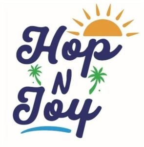

Trade Mark Journal No.2025/037 12 September 2025
WO0000001871684 (39,43)
Office of origin: Turkey
Date of International Registration:3 July 2025
Date of designation in the UK:
3 July 2025

At the top of the logo is an orange rising sun. Just below it is the word "Hop" written in navy blue script. Below the word Hop is a navy blue "N" between two green palm trees. At the bottom is the word "Joy" written in the same navy blue script.
- Class 39
- Land, water and air transport services, rental of land, water or air vehicles, arranging of tours, travel reservation, issuing of tickets for travel; travel route planning services; conducting sightseeing travel tours for others; providing tourist travel information via the internet; providing information to tourists relating to excursions and sightseeing; providing vehicles for tours and excursions; travel tourist guide services; organisation of travel tours; arranging of travel tours; arranging of excursions, day trips and sightseeing tours; arranging sightseeing tours and excursions; courier services (messages or merchandise); car parking; garage rental; boat storage; transport by pipeline; electricity distribution; water supplying; rescue operations for vehicles and goods; storage, wrapping and packaging of goods; transport and storage of trash, transport and storage of waste.
- Class 43
- Services for providing food and drink; services provided in relation to the preparation of food and drink for consumption; services for providing temporary accommodation; temporary accommodation reservations, for example, hotel reservations.
HOPNJOY LIMITED
Representative: PATENT-İŞ SINAİ MÜLKİYET HİZMETLERİ LİMİTED ŞİRKETİ, Ataköy 7-8-9-10. Kısım Mah. Nilüfer Sk. No:4, A5/A Blok Da:6, BAKIRKOY, TR-34158 ISTANBUL, TURKEY